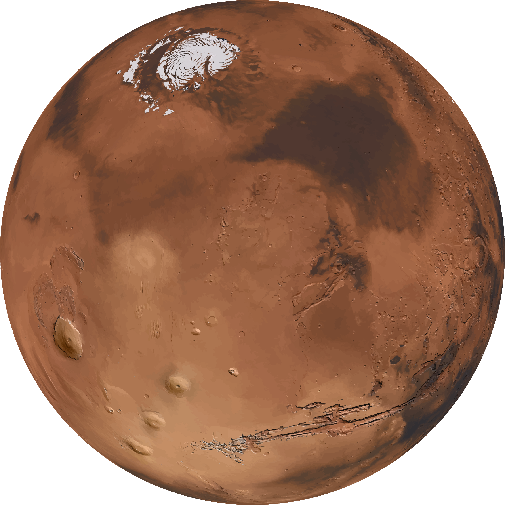

ABOUT MARS
Mars is the fourth planet from the Sun and the second-smallest planet in the Solar System after Mercury. In English, Mars carries a name of the Roman god of war, and is often referred to as the "Red Planet" because the reddish iron oxide prevalent on its surface gives it a reddish appearance that is distinctive among the astronomical bodies visible to the naked eye. Mars is a terrestrial planet with a thin atmosphere, having surface features reminiscent both of the impact craters of the Moon and the valleys, deserts, and polar ice caps of Earth.

It is thought that, during the Solar System's formation, Mars was created as the result of a stochastic process of run-away accretion of material from the protoplanetary disk that orbited the Sun. Streaks are common across Mars and new ones appear frequently on steep slopes of craters, troughs, and valleys. The streaks are dark at first and get lighter with age. The streaks can start in a tiny area, then spread out for hundreds of metres. Liquid water cannot exist on the surface of Mars due to low atmospheric pressure, which is less than 1% that of Earth's, except at the lowest elevations for short periods.